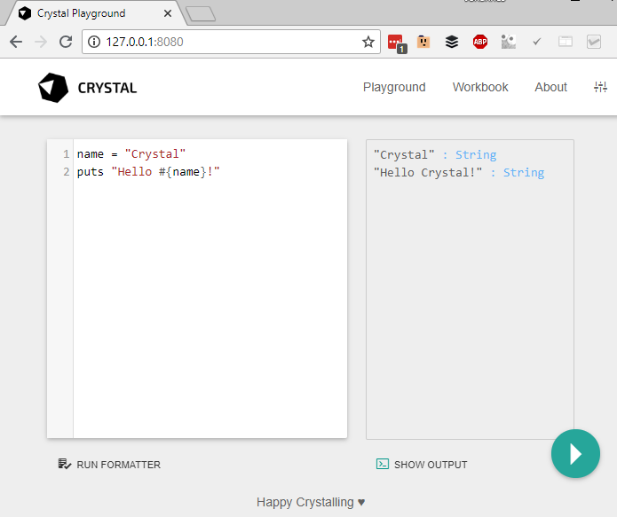

Using the compiler¶
Compiling and running at once¶
To compile and run a program in a single shot, invoke crystal run with a single filename:
$ echo 'puts "Hello World!"' > hello_world.cr
$ crystal run hello_world.cr
Hello World!
The run command compiles the source file hello_world.cr to a binary executable in a temporary location
and immediately executes it.
Creating an executable¶
The crystal build command builds a binary executable.
The output file has the same name as the source file minus the extension .cr.
$ crystal build hello_world.cr
$ ./hello_world
Hello World!
Release builds¶
By default, the generated executables are not fully optimized. The --release flag can be used to enable optimizations.
$ crystal build hello_world.cr --release
Compiling without release mode is much faster and the resulting binaries still offer pretty good performance.
Building in release mode should be used for production-ready executables and when performing benchmarks. For simple development builds, there is usually no reason to do so.
To reduce the binary size for distributable files, the --no-debug flag can be used. This removes debug symbols reducing file size, but obviously making debugging more difficult.
Creating a statically-linked executable¶
The --static flag can be used to build a statically-linked executable:
$ crystal build hello_world.cr --release --static
Note
Building fully statical linked executables is currently only supported on Alpine Linux.
More information about statically linking can be found in the Static Linking guide.
The compiler uses the CRYSTAL_LIBRARY_PATH environment variable as a first lookup destination for static and dynamic libraries that are to be linked. This can be used to provide static versions of libraries that are also available as dynamic libraries.
Creating a Crystal project¶
The crystal init command helps to initialize a Crystal project folder, setting
up a basic project structure. crystal init app <name> is used for an application,
crystal init lib <name> for a library.
$ crystal init app myapp
create myapp/.gitignore
create myapp/.editorconfig
create myapp/LICENSE
create myapp/README.md
create myapp/.travis.yml
create myapp/shard.yml
create myapp/src/myapp.cr
create myapp/src/myapp/version.cr
create myapp/spec/spec_helper.cr
create myapp/spec/myapp_spec.cr
Initialized empty Git repository in /home/crystal/myapp/.git/
Not all of these files are required for every project, and some might need more customization, but crystal init creates a good default environment for developing Crystal applications and libraries.
Compiler commands¶
crystal init: generate a new projectcrystal build: build an executablecrystal docs: generate documentationcrystal env: print Crystal environment informationcrystal eval: eval code from args or standard inputcrystal play: starts crystal playground servercrystal run: build and run programcrystal spec: build and run specscrystal tool: run a compiler toolcrystal help: show help about commands and optionscrystal version: show version
To see the available options for a particular command, use --help after a command:
crystal run¶
The run command compiles a source file to a binary executable and immediately runs it.
crystal [run] [<options>] <programfile> [-- <argument>...]
Arguments to the compiled binary can be separated with double dash -- from the compiler arguments.
The binary executable is stored in a temporary location between compiling and running.
Example:
$ echo 'puts "Hello #{ARGV[0]?}!"' > hello_world.cr
$ crystal run hello_world.cr -- Crystal
Hello Crystal!
Common options:
--release: Compile in release mode, doing extra work to apply optimizations to the generated code.--progress: Show progress during compilation.--static: Link statically.
More options are described in the integrated help: crystal run --help or man page man crystal.
crystal build¶
The crystal build command builds a dynamically-linked binary executable.
crystal build [<options>] <programfile>
Unless specified, the resulting binary will have the same name as the source file minus the extension .cr.
Example:
$ echo 'puts "Hello #{ARGV[0]?}!"' > hello_world.cr
$ crystal build hello_world.cr
$ ./hello_world Crystal
Hello Crystal!
Common options:
--cross-compile: Generate a .o file, and print the command to generate an executable to stdout.-D FLAG, --define FLAG: Define a compile-time flag.-o <output_file>: Define the name of the binary executable.--release: Compile in release mode, doing extra work to apply optimizations to the generated code.--link-flags FLAGS: Additional flags to pass to the linker.--lto=thin: Use ThinLTO, improving performance on release builds.--no-debug: Skip any symbolic debug info, reducing the output file size.--progress: Show progress during compilation.--static: Link statically.--verbose: Display executed commands.
More options are described in the integrated help: crystal build --help or man page man crystal.
crystal eval¶
The crystal eval command reads Crystal source code from command line or stdin, compiles it to a binary executable and immediately runs it.
crystal eval [<options>] [<source>]
If no source argument is provided, the Crystal source is read from standard input. The binary executable is stored in a temporary location between compiling and running.
Example:
$ crystal eval 'puts "Hello World"'
Hello World!
$ echo 'puts "Hello World"' | crystal eval
Hello World!
Note
When running interactively, stdin can usually be closed by typing the end of transmission character (Ctrl+D).
Common options:
-o <output_file>: Define the name of the binary executable.--release: Compile in release mode, doing extra work to apply optimizations to the generated code.--lto=thin: Use ThinLTO, improves performance.--no-debug: Skip any symbolic debug info, reducing the output file size.--progress: Show progress during compilation.--static: Link statically.
More options are described in the integrated help: crystal eval --help or man page man crystal.
crystal version¶
The crystal version command prints the Crystal version, LLVM version and default target triple.
crystal version
Example:
$ crystal version
Crystal 0.25.1 [b782738ff] (2018-06-27)
LLVM: 4.0.0
Default target: x86_64-unknown-linux-gnu
crystal init¶
The crystal init command initializes a Crystal project folder.
crystal init (lib|app) <name> [<dir>]
The first argument is either lib or app. A lib is a reusable library whereas app describes
an application not intended to be used as a dependency. A library doesn't have a shard.lock file
in its repository and no build target in shard.yml, but instructions for using it as a dependency.
Example:
$ crystal init lib my_cool_lib
create my_cool_lib/.gitignore
create my_cool_lib/.editorconfig
create my_cool_lib/LICENSE
create my_cool_lib/README.md
create my_cool_lib/.travis.yml
create my_cool_lib/shard.yml
create my_cool_lib/src/my_cool_lib.cr
create my_cool_lib/spec/spec_helper.cr
create my_cool_lib/spec/my_cool_lib_spec.cr
Initialized empty Git repository in ~/my_cool_lib/.git/
crystal docs¶
The crystal docs command generates API documentation from inline docstrings in Crystal files (see documenting code).
crystal docs [--output=<output_dir>] [--canonical-base-url=<url>] [<source_file>...]
The command creates a static website in output_dir (default ./docs), consisting of HTML files for each Crystal type,
in a folder structure mirroring the Crystal namespaces. The entrypoint docs/index.html can be opened by any web browser.
The entire API docs are also stored as a JSON document in $output_dir/index.json.
By default, all Crystal files in ./src will be appended (i.e. src/**/*.cr).
In order to account for load-order dependencies, source_file can be used to specify one (or multiple)
entrypoints for the docs generator.
crystal docs src/my_app.cr
Common options:
--project-name=NAME: Set the project name. The default value is extracted fromshard.ymlif available. In case no default can be found, this option is mandatory.--project-version=VERSION: Set the project version. The default value is extracted from current git commit orshard.ymlif available. In case no default can be found, this option is mandatory.--output=DIR, -o DIR: Set the output directory (default:./docs)--canonical-base-url=URL, -b URL: Set the canonical base url
For the above example to output the docs at public with custom canonical base url, and entrypoint src/my_app.cr,
the following arguments can be used:
crystal docs --output public --canonical-base-url http://example.com/ src/my_app.cr
crystal env¶
The crystal env command prints environment variables used by Crystal.
crystal env [<var>...]
By default, it prints information as a shell script. If one or more var arguments are provided,
the value of each named variable is printed on its own line.
Example:
$ crystal env
CRYSTAL_CACHE_DIR="/home/crystal/.cache/crystal"
CRYSTAL_PATH="/usr/bin/../share/crystal/src:lib"
CRYSTAL_VERSION="0.28.0"
CRYSTAL_LIBRARY_PATH="/usr/bin/../lib/crystal/lib"
$ crystal env CRYSTAL_VERSION
0.28.0
crystal spec¶
The crystal spec command compiles and runs a Crystal spec suite.
crystal spec [<options>] [<file>...] [-- [<runner_options>]]
All files arguments are concatenated into a single Crystal source. If an argument points to a folder, all spec
files inside that folder are appended. If no files argument is provided, the default is ./spec. A filename can be suffixed by :
and a line number, providing this location to the --location runner option (see below).
Run crystal spec --options for available options.
Runner options:
runner_options are provided to the compiled binary executable which runs the specs. They should be separated from
the other arguments by a double dash (--).
--verbose: Prints verbose output, including all example names.--profile: Prints the 10 slowest specs.--fail-fast: Abort the spec run on first failure.--junit_output <output_dir>: Generates JUnit XML output.
The following options can be combined to filter the list of specs to run.
--example <name>: Runs examples whose full nested names includename.--line <line>: Runs examples whose line matchesline.--location <file>:<line>: Runs example(s) atlineinfile(multiple options allowed).--tag <tag>: Runs examples with the specified tag, or excludes examples by adding~before the tag (multiple options allowed).--tag a --tag bwill include specs tagged withaORb.--tag ~a --tag ~bwill include specs not tagged withaAND not tagged withb.--tag a --tag ~bwill include specs tagged witha, but not tagged withb
Example:
$ crystal spec
F
Failures:
1) Myapp works
Failure/Error: false.should eq(true)
Expected: true
got: false
# spec/myapp_spec.cr:7
Finished in 880 microseconds
1 examples, 1 failures, 0 errors, 0 pending
Failed examples:
crystal spec spec/myapp_spec.cr:6 # Myapp works
crystal play¶
The crystal play command starts a webserver serving an interactive Crystal playground.
crystal play [--port <port>] [--binding <host>] [--verbose] [file]

crystal tool¶
crystal tool context: Show context for given locationcrystal tool expand: Show macro expansion for given locationcrystal tool format: Format Crystal filescrystal tool hierarchy: Show type hierarchycrystal tool implementations: Show implementations for given call in locationcrystal tool types: Show types of main variables
crystal tool format¶
The crystal tool format command applies default format to Crystal source files.
crystal tool format [--check] [<path>...]
path can be a file or folder name and include all Crystal files in that folder tree. Omitting path is equal to
specifying the current working directory.
Environment variables¶
The following environment variables are used by the Crystal compiler if set in the environment. Otherwise the compiler will populate them with default values. Their values can be inspected using crystal env.
CRYSTAL_CACHE_DIR: Defines path where Crystal caches partial compilation results for faster subsequent builds. This path is also used to temporarily store executables when Crystal programs are run withcrystal runrather thancrystal build. Default value is the first directory that either exists or can be created of${XDG_CACHE_HOME}/crystal(ifXDG_CACHE_HOMEis defined),${HOME}/.cache/crystal,${HOME}/.crystal,./.crystal. IfCRYSTAL_CACHE_DIRis set but points to a path that is not writeable, the default values are used instead.CRYSTAL_PATH: Defines paths where Crystal searches for required files.CRYSTAL_VERSIONis only available as output ofcrystal env. The compiler neither sets nor reads it.CRYSTAL_LIBRARY_PATH: The compiler uses the paths in this variable as a first lookup destination for static and dynamic libraries that are to be linked. For example, if static libraries are put inbuild/libs, setting the environment variable accordingly will tell the compiler to look for libraries there.